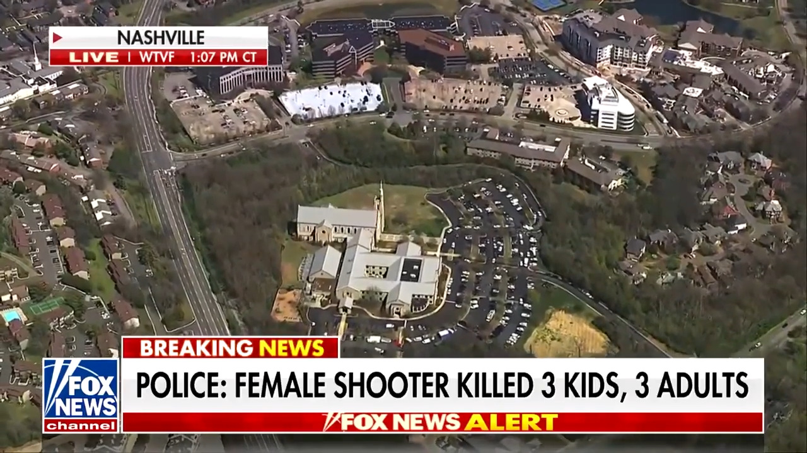

Led control rooms during extended breaking news coverage, guiding talent and crew through last-second changes cleanly without a planned rundown
Oversaw FOX Broadcast Network news events from planning through live broadcast, including inaugurations, SOTUs, congressional hearings, and high-profile funerals
Launched and executive produced America Reports, consistently winning its time slot and growing audience year-to-year
Managed and mentored show team of producers, bookers, writers, and production assistants

PREVIOUSLY AT FOX
Senior Producer, Shepard Smith Reporting
Developed daily editorial and crafted rundown, then oversaw show team throughout daily production to ensure meeting editorial vision and journalistic standards
Lead producer of 2016 election night coverage on FOX Broadcast Network
Line Producer, Shepard Smith Reporting
Built rundown, timed show, and trafficked changes to talent and tech crew
Writer, FOX Report with Shepard Smith
Designated A1 writer, responsible for lead scripts and teases to meet the anchor’s exacting grammar, style, and journalistic standards.